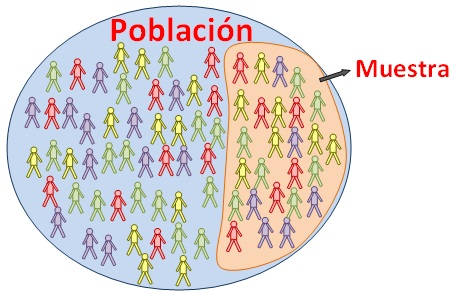

<link rel="stylesheet" href="muestra.css">
<section id="muestra" align="center">
    <title>Muestra</title>
    
    
   <br>
    <h1>Muestra</h1>
    <h2>Definición:</h2>
    <p>Una muestra, en el contexto estadístico, es un subconjunto representativo de una población más grande. Se utiliza para hacer inferencias o generalizaciones sobre la población en su conjunto. La muestra debe ser seleccionada de manera aleatoria o siguiendo algún método específico para evitar sesgos y garantizar que sea representativa de la población de interés. Las muestras son fundamentales en la investigación científica, el muestreo de opinión, la encuesta demográfica y en muchos otros campos donde se necesita obtener información sobre una población sin tener que examinar cada individuo dentro de ella.</p>
    <p>Claro, además de ser representativa, una muestra también debe ser lo suficientemente grande para poder obtener conclusiones válidas y precisas sobre la población de interés. La selección adecuada de una muestra es crucial para garantizar la validez y la fiabilidad de los resultados obtenidos a partir de ella. Además, es importante tener en cuenta que existen diferentes métodos de muestreo, como el muestreo aleatorio simple, el muestreo estratificado, el muestreo por conglomerados, entre otros, cada uno con sus propias ventajas y limitaciones dependiendo del contexto y los objetivos de la investigación. En resumen, una muestra bien seleccionada y adecuadamente gestionada es esencial para obtener conclusiones válidas y confiables en el ámbito estadístico y de investigación.</p>
    <h2>Referencias</h2>
    <br>
    <p>De Enciclopedia Significados, E. (2016, 1 septiembre). Qué es una Muestra (concepto y definición). Enciclopedia Significados<a href=" https://www.significados.com/muestra/"> https://www.significados.com/muestra/</a></p>
    <br>
    <a href="index.html" class="boton">Regresar a la página principal</a>
</section>